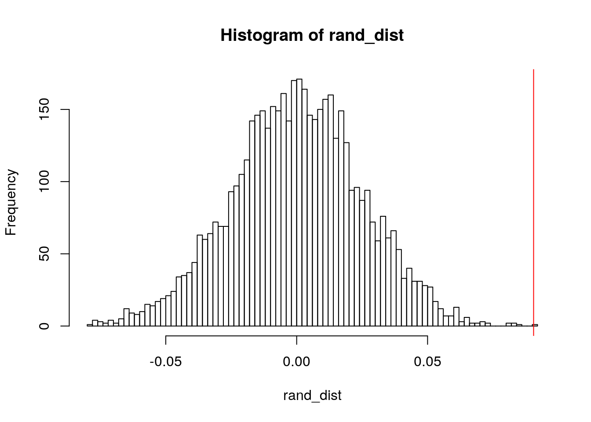

NAME: Ayanna Fisher EID: adf2353 DUE: 05/07/2021
This dataset details Google Play Store apps and their corresponding qualities. With 10,841 observations, there are 13 variables, App, Category, Rating, Reviews, Size, Installs, Type, Price, Content Rating, Genres, Last Updated, Current Version, and Android Version. Of the 13 variables, this project will focus on variables Category, Rating, Reviews, Size, and Type. After tidying the dataset and omitting any NA values, there will be a total of 7,088 observations to manipulate in this project.
Source: https://www.kaggle.com/lava18/google-play-store-apps
TIDY DATASET
# required packages
library(tidyverse)
library(tidyr)
library(dplyr)
library(kableExtra)
library(ggplot2)
library(sandwich)
library(lmtest)
library(pROC)
library(plotROC)
library(glmnet)
library(rstatix)
# untidy dataset
ggl0 <- read_csv("googleplaystore.csv")
# remove unneeded varia and rows with NA values
ggl1 <- ggl0 %>% select(1:8, 10:11) %>% na.omit() %>% mutate(ID = row_number())
# remove $ from price obs final tidy dataset
ggl2 <- mutate(ggl1, Price = ifelse(grepl("$", Price), as.numeric(gsub("\\$",
"", Price))))
# final tidy dataset
ggl <- ggl2 %>% group_by(Category) %>% filter(!duplicated(App)) %>%
filter(!grepl("Varies with device", Size)) %>% select(11,
2:5, 7)
# remove M at end of Size values
ggl$Size = gsub(".{1}$", "", ggl$Size)
# transform ch to numeric
ggl <- ggl %>% mutate(Size = as.numeric(Size))
ggl %>% head() %>% kbl(caption = "**Tidy Google Play Store Dataset**") %>%
kable_styling(bootstrap_options = c("striped", "hover", "condensed",
"responsive"))| ID | Category | Rating | Reviews | Size | Type |
|---|---|---|---|---|---|
| 1 | ART_AND_DESIGN | 4.1 | 159 | 19.0 | Free |
| 2 | ART_AND_DESIGN | 3.9 | 967 | 14.0 | Free |
| 3 | ART_AND_DESIGN | 4.7 | 87510 | 8.7 | Free |
| 4 | ART_AND_DESIGN | 4.5 | 215644 | 25.0 | Free |
| 5 | ART_AND_DESIGN | 4.3 | 967 | 2.8 | Free |
| 6 | ART_AND_DESIGN | 4.4 | 167 | 5.6 | Free |
MANOVA
# means of each numeric variable are equal 1 MANOVA
man1 <- manova(cbind(Rating, Reviews, Size) ~ Type, data = ggl)
summary(man1)## Df Pillai approx F num Df den Df Pr(>F)
## Type 1 0.0061065 14.508 3 7084 2.03e-09 ***
## Residuals 7086
## ---
## Signif. codes: 0 '***' 0.001 '**' 0.01 '*' 0.05 '.' 0.1 ' ' 1# significant p-value --> run univariate ANOVAs 3 ANOVAs
summary.aov(man1)## Response Rating :
## Df Sum Sq Mean Sq F value Pr(>F)
## Type 1 4.11 4.1110 13.248 0.0002748 ***
## Residuals 7086 2198.90 0.3103
## ---
## Signif. codes: 0 '***' 0.001 '**' 0.01 '*' 0.05 '.' 0.1 ' ' 1
##
## Response Reviews :
## Df Sum Sq Mean Sq F value Pr(>F)
## Type 1 1.5355e+13 1.5355e+13 9.8839 0.001674 **
## Residuals 7086 1.1009e+16 1.5536e+12
## ---
## Signif. codes: 0 '***' 0.001 '**' 0.01 '*' 0.05 '.' 0.1 ' ' 1
##
## Response Size :
## Df Sum Sq Mean Sq F value Pr(>F)
## Type 1 160673 160673 17.118 3.554e-05 ***
## Residuals 7086 66511479 9386
## ---
## Signif. codes: 0 '***' 0.001 '**' 0.01 '*' 0.05 '.' 0.1 ' ' 1ggl %>% group_by(Type) %>% summarize(mean(Rating), mean(Reviews),
mean(Size)) %>% head() %>% kbl(caption = "**Tidy GDP**") %>%
kable_styling(bootstrap_options = c("striped", "hover", "condensed",
"responsive"))| Type | mean(Rating) | mean(Reviews) | mean(Size) |
|---|---|---|---|
| Free | 4.155676 | 181899.60 | 36.03947 |
| Paid | 4.246225 | 6899.79 | 53.94052 |
# 3 t tests
pairwise.t.test(ggl$Rating, ggl$Type, p.adj = "none")##
## Pairwise comparisons using t tests with pooled SD
##
## data: ggl$Rating and ggl$Type
##
## Free
## Paid 0.00027
##
## P value adjustment method: nonepairwise.t.test(ggl$Reviews, ggl$Type, p.adj = "none")##
## Pairwise comparisons using t tests with pooled SD
##
## data: ggl$Reviews and ggl$Type
##
## Free
## Paid 0.0017
##
## P value adjustment method: nonepairwise.t.test(ggl$Size, ggl$Type, p.adj = "none")##
## Pairwise comparisons using t tests with pooled SD
##
## data: ggl$Size and ggl$Type
##
## Free
## Paid 3.6e-05
##
## P value adjustment method: none# P(>= least 1 type I error) --> 1 - P(No Type I errors)
unadj_prob = 1 - (0.95^7)
unadj_prob## [1] 0.3016627# bonferroni adjustment alpha / num of tests
adj_alpha = 0.05/7
adj_alpha## [1] 0.007142857# adjusted P(>= least 1 type I error)
adj_prob = 1 - ((1 - adj_alpha)^7)
adj_prob## [1] 0.04894124# adjusted signifcance threshold = 0.00714 everything is
# STILL SIGNIFICANTThe one-way MANOVA was conducted to determine the effect of the Type (Paid or Free) on 3 dependent variables (Rating, Reviews, and Size). Significant differences were found for the 2 Types for at least 1 of the dependent variables, Pillai trace = 0.006, pseudo F(3, 7,084) = 14.508, p-value < 0.0001. Assumptions of multivariate normality and homogeneity of covariances supposed violated. Univariate ANOVAs for each of the dependent variables was conducted as follow-up tests to the MANOVA, using the Bonferroni method for controlling Type 1 error rates for multiple comparisons. The univariate ANOVAs for Rating, Reviews, and Size were also significant, F(1, 7,086) = 13.248, p-values < 0.0001, F(1, 7086) = 9.884, p-value < 0.001, F(1, 7,086) = 17.118, p-value < 0.0001, respectfully. Post-hoc analysis was performed conducting pairwise comparisons to determine which Type differed in rating, reviews, and size. Both Types were found to differ significantly from each other in terms of these 3 dependent variables after adjusting for multiple comparisons (bonferroni α = 0.05/7 = 0.00714). If the significance level was left unadjusted, the probability of at least 1 Type I error occurring would be 30.16%. After adjustment, the chance would lower to 4.89%.
RANDOMIZATION TEST
# categorical (Type) vs numeric (Rating) ->> mean difference
# observed mean difference
ggl %>% group_by(Type) %>% summarize(means = mean(Rating)) %>%
summarize(mean_diff = diff(means)) %>% round(5) %>% kbl(caption = "**Observed Mean Difference**") %>%
kable_styling(bootstrap_options = c("striped", "hover", "condensed",
"responsive"))| mean_diff |
|---|
| 0.09055 |
# randomize to get a simulated test statistic (mean
# difference) if the null hypothesis (no association between
# Type) was true create vector to do this 5000 times
rand_dist <- vector()
for (i in 1:5000) {
new <- data.frame(Rating = sample(ggl$Rating), Type = ggl$Type)
rand_dist[i] <- mean(new[new$Type == "Paid", ]$Rating) -
mean(new[new$Type == "Free", ]$Rating)
}
{
hist(rand_dist, breaks = 91)
abline(v = c(0.0905, -0.0905), col = "red")
}
# p value of rand_dist p < alpha ->> reject the null
# *************************************************************FIX
# SOMETHING IS WRONG HERE
mean(rand_dist > 0.0905 | rand_dist < -0.0905)## [1] 0# dist of response varia, ratings, for each each type number
# of bins calculated from sqrt of number of obs (sqrt 8280 =
# 90.91)
ggplot(ggl, aes(Rating, fill = Type)) + geom_histogram(bins = 91) +
facet_wrap(~Type) + theme(legend.position = "none")A randomization test was conducted to see whether there was a difference in mean rating between paid and free apps in the Google Play Store. Assumptions for the independent t-test were violated. -H0 : mean rating is the same for paid vs free apps -HA : mean rating is difference for paiv vs free apps Monte Carlo algorithm was used to compite a random subset of 5000 permutations to calculate a p-value of 0.0002, in which case we are safe to reject the null hypothesis that the mean rating is the same for paid vs free apps in the Google Play Store.
LINEAR REGRESSION MODEL
# linear regression Rating from Reviews Type and Size
fit1 <- lm(Rating ~ Reviews + Type + Size, data = ggl)
summary(fit1)##
## Call:
## lm(formula = Rating ~ Reviews + Type + Size, data = ggl)
##
## Residuals:
## Min 1Q Median 3Q Max
## -3.2539 -0.1598 0.1384 0.3461 0.9628
##
## Coefficients:
## Estimate Std. Error t value Pr(>|t|)
## (Intercept) 4.156e+00 7.349e-03 565.470 < 2e-16 ***
## Reviews 3.113e-08 5.297e-09 5.876 4.39e-09 ***
## TypePaid 9.873e-02 2.486e-02 3.971 7.22e-05 ***
## Size -1.527e-04 6.815e-05 -2.241 0.0251 *
## ---
## Signif. codes: 0 '***' 0.001 '**' 0.01 '*' 0.05 '.' 0.1 ' ' 1
##
## Residual standard error: 0.5556 on 7084 degrees of freedom
## Multiple R-squared: 0.007316, Adjusted R-squared: 0.006895
## F-statistic: 17.4 on 3 and 7084 DF, p-value: 2.968e-11# coef
coef(fit1)## (Intercept) Reviews TypePaid Size
## 4.155518e+00 3.112780e-08 9.872990e-02 -1.527257e-04# mean center numeric variable, Reviews, involved in
# interaction
ggl$Reviews_c <- ggl$Reviews - mean(ggl$Reviews, na.rm = T)
ggl$Size_c <- ggl$Size - mean(ggl$Size, na.rm = T)
# regress interaction of centered Reviews and Type
fit2 <- lm(Rating ~ Reviews_c * Type * Size_c, data = ggl)
summary(fit2)##
## Call:
## lm(formula = Rating ~ Reviews_c * Type * Size_c, data = ggl)
##
## Residuals:
## Min 1Q Median 3Q Max
## -3.2389 -0.1757 0.1200 0.3487 0.9629
##
## Coefficients:
## Estimate Std. Error t value Pr(>|t|)
## (Intercept) 4.157e+00 6.880e-03 604.200 < 2e-16 ***
## Reviews_c 6.106e-08 9.386e-09 6.506 8.25e-11 ***
## TypePaid 3.962e-01 1.334e-01 2.970 0.002992 **
## Size_c -2.750e-04 7.991e-05 -3.441 0.000583 ***
## Reviews_c:TypePaid 1.830e-06 8.114e-07 2.256 0.024107 *
## Reviews_c:Size_c -7.500e-10 1.938e-10 -3.869 0.000110 ***
## TypePaid:Size_c 2.331e-03 3.711e-03 0.628 0.530022
## Reviews_c:TypePaid:Size_c 1.368e-08 2.226e-08 0.614 0.538942
## ---
## Signif. codes: 0 '***' 0.001 '**' 0.01 '*' 0.05 '.' 0.1 ' ' 1
##
## Residual standard error: 0.555 on 7080 degrees of freedom
## Multiple R-squared: 0.01022, Adjusted R-squared: 0.009242
## F-statistic: 10.44 on 7 and 7080 DF, p-value: 4.079e-13# interaction coef
coef(fit2)## (Intercept) Reviews_c TypePaid
## 4.157032e+00 6.106370e-08 3.962234e-01
## Size_c Reviews_c:TypePaid Reviews_c:Size_c
## -2.749586e-04 1.830372e-06 -7.499899e-10
## TypePaid:Size_c Reviews_c:TypePaid:Size_c
## 2.330784e-03 1.367888e-08# plot regression
ggplot(ggl, aes(Reviews, Rating)) + geom_point(aes(color = Type),
alpha = 0.7) + geom_smooth(method = "lm", se = F, linetype = "longdash",
colour = "black", size = 1) + scale_x_log10(labels = scales::number)# interaction plot no data points below 3rd break on y axis
# ylim set to 3 min, 5 max
ggplot(ggl, aes(x = Reviews_c, y = Rating)) + geom_point() +
geom_smooth(method = "lm", formula = y ~ 1, se = F, fullrange = T,
aes(color = Type)) + theme(legend.position = "none") +
ggtitle("t-test") + xlab(" ") + scale_x_log10(labels = scales::number) +
ylim(3, 5)# proportion of variance explained in model
summary(fit1)$r.sq## [1] 0.007315683# assumptions: linearity and homoskedasticity ->> not met
resids <- fit1$residuals
fit1vals <- fit1$fitted.values
ggplot() + geom_point(aes(fit1vals, resids)) + geom_hline(yintercept = 0,
col = "red") + scale_x_log10(labels = scales::number)# assumptions: normality histogram of the distribution of
# residuals
ggplot() + geom_histogram(aes(resids), bins = 20)# qq-plot of the distribution of residuals
ggplot() + geom_qq(aes(sample = resids)) + geom_qq_line(aes(sample = resids))ks.test(resids, "pnorm", sd = sd(resids))##
## One-sample Kolmogorov-Smirnov test
##
## data: resids
## D = 0.14, p-value < 2.2e-16
## alternative hypothesis: two-sided# compute regression WITH robust standard errors ho:
# homoskedastic
bptest(fit1)##
## studentized Breusch-Pagan test
##
## data: fit1
## BP = 9.3983, df = 3, p-value = 0.02444# uncorrected SEs
summary(fit1)$coef[, 1:2]## Estimate Std. Error
## (Intercept) 4.155518e+00 7.348784e-03
## Reviews 3.112780e-08 5.297323e-09
## TypePaid 9.872990e-02 2.486160e-02
## Size -1.527257e-04 6.815140e-05# corrected SEs
coeftest(fit1, vcov = vcovHC(fit1))[, 1:2]## Estimate Std. Error
## (Intercept) 4.155518e+00 7.546512e-03
## Reviews 3.112780e-08 7.003825e-09
## TypePaid 9.872990e-02 2.539682e-02
## Size -1.527257e-04 6.732702e-05 For every one unit increase in Reviews, the Rating of an app increases by 3.11e-08 on average, t = 5.876, df = 7084, p-value < 0.001. For every one unit increase in Size, the Rating of an app decreases by 1.527e-04 on average, t = -2.241, df = 7084, p-value < 0.05. After controlling for Reviews and Size, there is a significant difference in the Rating of an app in the Google Play Store between paid and free apps, t = 3.971, df = 7084, p-value < 0.001.
After mean centering Reviews and Size, an interaction linear regression was ran. Intercept: 4.157 is mean/predicted Rating for free apps with an average Size and average amount of Reviews. For apps with an average amount of reviews, Paid apps have an mean/predicted Rating that is 6.12e-08 greater than Free apps, difference is significant.
Assumptions of linearity, normality, and homoskedasticity can be observed in the graphs visualized above. Although all assumptions were not met, the regression was recomputed with robust standard errors. The corrected standard errors for the intercept and Reviews became larger while TypePaid and Size decreased. This means when a testing for a t-statistic, the Intercept and Reviews will have a higher chance at having a lower p-value (less likely to reject the null hypothesis).
BOOTSTRAPED STANDARD ERRORS
# regress interaction of centered Reviews and Type
fit3 <- lm(Rating ~ Reviews_c * Type * Size_c, data = ggl)
summary(fit3)##
## Call:
## lm(formula = Rating ~ Reviews_c * Type * Size_c, data = ggl)
##
## Residuals:
## Min 1Q Median 3Q Max
## -3.2389 -0.1757 0.1200 0.3487 0.9629
##
## Coefficients:
## Estimate Std. Error t value Pr(>|t|)
## (Intercept) 4.157e+00 6.880e-03 604.200 < 2e-16 ***
## Reviews_c 6.106e-08 9.386e-09 6.506 8.25e-11 ***
## TypePaid 3.962e-01 1.334e-01 2.970 0.002992 **
## Size_c -2.750e-04 7.991e-05 -3.441 0.000583 ***
## Reviews_c:TypePaid 1.830e-06 8.114e-07 2.256 0.024107 *
## Reviews_c:Size_c -7.500e-10 1.938e-10 -3.869 0.000110 ***
## TypePaid:Size_c 2.331e-03 3.711e-03 0.628 0.530022
## Reviews_c:TypePaid:Size_c 1.368e-08 2.226e-08 0.614 0.538942
## ---
## Signif. codes: 0 '***' 0.001 '**' 0.01 '*' 0.05 '.' 0.1 ' ' 1
##
## Residual standard error: 0.555 on 7080 degrees of freedom
## Multiple R-squared: 0.01022, Adjusted R-squared: 0.009242
## F-statistic: 10.44 on 7 and 7080 DF, p-value: 4.079e-13# interaction coef
coef(fit3) %>% round(10)## (Intercept) Reviews_c TypePaid
## 4.1570324181 0.0000000611 0.3962233505
## Size_c Reviews_c:TypePaid Reviews_c:Size_c
## -0.0002749586 0.0000018304 -0.0000000007
## TypePaid:Size_c Reviews_c:TypePaid:Size_c
## 0.0023307839 0.0000000137# normal theory SEs
coeftest(fit3)[, 1:2]## Estimate Std. Error
## (Intercept) 4.157032e+00 6.880229e-03
## Reviews_c 6.106370e-08 9.385883e-09
## TypePaid 3.962234e-01 1.334275e-01
## Size_c -2.749586e-04 7.990984e-05
## Reviews_c:TypePaid 1.830372e-06 8.113714e-07
## Reviews_c:Size_c -7.499899e-10 1.938248e-10
## TypePaid:Size_c 2.330784e-03 3.711421e-03
## Reviews_c:TypePaid:Size_c 1.367888e-08 2.226222e-08# robust/corrected SEs
coeftest(fit3, vcov = vcovHC(fit2))[, 1:2]## Estimate Std. Error
## (Intercept) 4.157032e+00 6.825279e-03
## Reviews_c 6.106370e-08 8.291818e-09
## TypePaid 3.962234e-01 1.156097e-01
## Size_c -2.749586e-04 7.724059e-05
## Reviews_c:TypePaid 1.830372e-06 7.227169e-07
## Reviews_c:Size_c -7.499899e-10 1.561870e-10
## TypePaid:Size_c 2.330784e-03 1.672343e-03
## Reviews_c:TypePaid:Size_c 1.367888e-08 1.043558e-08# resample observations 5000x for lm with interaction
samp_distn <- replicate(5000, {
# bootstrap sample of rows
boot_dat <- sample_frac(ggl, replace = T)
# fit interaction model on bootstrap sample
fit3 <- lm(Rating ~ Reviews_c * Type * Size_c, data = boot_dat)
coef(fit3)
})
# estimated standard errors (sampling rows)
samp_distn %>% t %>% as.data.frame %>% summarize_all(sd)## (Intercept) Reviews_c TypePaid Size_c Reviews_c:TypePaid
## 1 0.006701972 8.196839e-09 0.1444317 7.664418e-05 8.996696e-07
## Reviews_c:Size_c TypePaid:Size_c Reviews_c:TypePaid:Size_c
## 1 1.594986e-10 0.002751434 1.664692e-08 When the standard errors are bootstrapped, the rows are resampled. Although they are all differ within a 0.1 difference, the standard errors that increased due to bootstrapping were: Reviews (mean centered), Size (mean centered), and interaction between Reviews_c:TypePaid. If the bootstrap standard errors were used, these variables and interactions would have a lower p-value and a higher chance at rejecting the null hypothesis.
LOGISTIC REGRESSION WITH BINARY VARIABLE
# binary categorical variable: Type Free = 0 , Paid = 1
gglB <- ggl %>% mutate(y = ifelse(Type == "Paid", 1, 0))
gglB$Type <- factor(gglB$Type, levels = c("Paid", "Free"))
head(gglB) %>% kbl(caption = "**Binary Variable Added**") %>%
kable_styling(bootstrap_options = c("striped", "hover", "condensed",
"responsive"))| ID | Category | Rating | Reviews | Size | Type | Reviews_c | Size_c | y |
|---|---|---|---|---|---|---|---|---|
| 1 | ART_AND_DESIGN | 4.1 | 159 | 19.0 | Free | -168334.16 | -18.41084 | 0 |
| 2 | ART_AND_DESIGN | 3.9 | 967 | 14.0 | Free | -167526.16 | -23.41084 | 0 |
| 3 | ART_AND_DESIGN | 4.7 | 87510 | 8.7 | Free | -80983.16 | -28.71084 | 0 |
| 4 | ART_AND_DESIGN | 4.5 | 215644 | 25.0 | Free | 47150.84 | -12.41084 | 0 |
| 5 | ART_AND_DESIGN | 4.3 | 967 | 2.8 | Free | -167526.16 | -34.61084 | 0 |
| 6 | ART_AND_DESIGN | 4.4 | 167 | 5.6 | Free | -168326.16 | -31.81084 | 0 |
# logistic regression
fit4 <- glm(y ~ Rating + Reviews + Size, data = gglB, family = binomial)
summary(fit4)##
## Call:
## glm(formula = y ~ Rating + Reviews + Size, family = binomial,
## data = gglB)
##
## Deviance Residuals:
## Min 1Q Median 3Q Max
## -0.8582 -0.4593 -0.4034 -0.2658 4.2517
##
## Coefficients:
## Estimate Std. Error z value Pr(>|z|)
## (Intercept) -4.233e+00 3.774e-01 -11.216 < 2e-16 ***
## Rating 4.729e-01 8.825e-02 5.358 8.42e-08 ***
## Reviews -1.719e-05 2.428e-06 -7.078 1.47e-12 ***
## Size 1.263e-03 3.212e-04 3.930 8.49e-05 ***
## ---
## Signif. codes: 0 '***' 0.001 '**' 0.01 '*' 0.05 '.' 0.1 ' ' 1
##
## (Dispersion parameter for binomial family taken to be 1)
##
## Null deviance: 3833.3 on 7087 degrees of freedom
## Residual deviance: 3615.3 on 7084 degrees of freedom
## AIC: 3623.3
##
## Number of Fisher Scoring iterations: 11# exponentiate coefficients for interpretation
exp(coef(fit4))## (Intercept) Rating Reviews Size
## 0.01450914 1.60458805 0.99998281 1.00126336# confusion matrix try 2
prob <- predict(fit4, type = "response")
pred <- ifelse(prob > 0.5, 1, 0)
table(prediction = pred, truth = gglB$y) %>% addmargins## truth
## prediction 0 1 Sum
## 0 6545 543 7088
## Sum 6545 543 7088# Accuracy
(6545 + 543)/7088## [1] 1# Sensitivity (TPR)
0/0## [1] NaN# Specificity (TNR)
6545/6545## [1] 1# Precision (PPV)
0/0## [1] NaN# logit values added to dataframe
gglB$logit <- predict(fit4, type = "link")
head(gglB) %>% kbl(caption = "**Logit values Added**") %>% kable_styling(bootstrap_options = c("striped",
"hover", "condensed", "responsive"))| ID | Category | Rating | Reviews | Size | Type | Reviews_c | Size_c | y | logit |
|---|---|---|---|---|---|---|---|---|---|
| 1 | ART_AND_DESIGN | 4.1 | 159 | 19.0 | Free | -168334.16 | -18.41084 | 0 | -2.272966 |
| 2 | ART_AND_DESIGN | 3.9 | 967 | 14.0 | Free | -167526.16 | -23.41084 | 0 | -2.387739 |
| 3 | ART_AND_DESIGN | 4.7 | 87510 | 8.7 | Free | -80983.16 | -28.71084 | 0 | -3.503538 |
| 4 | ART_AND_DESIGN | 4.5 | 215644 | 25.0 | Free | 47150.84 | -12.41084 | 0 | -5.779750 |
| 5 | ART_AND_DESIGN | 4.3 | 967 | 2.8 | Free | -167526.16 | -34.61084 | 0 | -2.212733 |
| 6 | ART_AND_DESIGN | 4.4 | 167 | 5.6 | Free | -168326.16 | -31.81084 | 0 | -2.148161 |
# logit density ggplot
gglB %>% ggplot() + geom_density(aes(logit, color = Type, fill = Type),
alpha = 0.4) + theme(legend.position = c(0.835, 0.75)) +
geom_vline(xintercept = 0) + xlab("logit (log-odds)") + geom_rug(aes(logit,
color = Type)) + xlim(-7.5, 0)# ROC plot
ROCplot <- ggplot(gglB) + geom_roc(aes(d = y, m = prob), n.cuts = 0) +
geom_segment(aes(x = 0, xend = 1, y = 0, yend = 1), lty = 2)
ROCplot# calculate AUC
calc_auc(ROCplot) %>% kbl(caption = "**AUC from ROCplot**") %>%
kable_styling(bootstrap_options = c("striped", "hover", "condensed",
"responsive"))| PANEL | group | AUC |
|---|---|---|
| 1 | -1 | 0.6853133 |
After manipulating the Type variable into a 1 0 binary column, a logistic regression was computed from Rating, Reviews, and Size. For every 1 unit increase of Rating, the odds of an app in the Google Play Store being paid are multiplied by e^0.4729 = 1.60. The odds of an app being paid increases by 2.3% for every additional rating. For every 1 unit increase of Reviews, the odds of an app being paid are multiplied by 0.999. The odds increase by 1.45% for every additional review. As for Size, for every 1 unit increase, the odds of an app being paid is multiplied by 1.0013. The odds increase by 1.45% for every additional Size.
After computing an ROC curve, we can visualize how well the model is able to visualize trade-off between sensitivity and specificity. A more quantitative answer is given with the AUC value of 0.685, concluding that it would be difficult to predict if the app cost money or is free (Type) from just Rating, Reviews, and Size. That being said, AUC shows that the probability that a randomly selected app is paid (y = 1) has a higher predicted probability than a randomly selected free app.
LOGISTIC REGRESSION FROM ALL VARIABLES
# Price variable was giving 1 for every diagnostic likely due
# to large range (0-400) ID, Price, Genre, logit were removed
# Type removed due to y being its binary representative Genre
# removed since it overlaps too much with Category
gglB <- gglB %>% select(2:5, 9)
fit5 <- glm(y ~ (.), data = gglB, family = binomial)
prob <- predict(fit5, type = "response")
# class diagnostic algorithm
class_diag <- function(probs, truth) {
# CONFUSION MATRIX: CALCULATE ACCURACY, TPR, TNR, PPV
tab <- table(factor(probs > 0.5, levels = c("FALSE", "TRUE")),
truth)
acc = sum(diag(tab))/sum(tab)
sens = tab[2, 2]/colSums(tab)[2]
spec = tab[1, 1]/colSums(tab)[1]
ppv = tab[2, 2]/rowSums(tab)[2]
f1 = 2 * (sens * ppv)/(sens + ppv)
if (is.numeric(truth) == FALSE & is.logical(truth) == FALSE)
truth <- as.numeric(truth) - 1
# CALCULATE EXACT AUC
ord <- order(probs, decreasing = TRUE)
probs <- probs[ord]
truth <- truth[ord]
TPR = cumsum(truth)/max(1, sum(truth))
FPR = cumsum(!truth)/max(1, sum(!truth))
dup <- c(probs[-1] >= probs[-length(probs)], FALSE)
TPR <- c(0, TPR[!dup], 1)
FPR <- c(0, FPR[!dup], 1)
n <- length(TPR)
auc <- sum(((TPR[-1] + TPR[-n])/2) * (FPR[-1] - FPR[-n]))
data.frame(acc, sens, spec, ppv, f1, auc)
}
# in sample classification diagnostics
class_diag(prob, gglB$y) %>% kbl(caption = "**Classification Diagnostics
Involving All Main Effects**") %>%
kable_styling(bootstrap_options = c("striped", "hover", "condensed",
"responsive"))| acc | sens | spec | ppv | f1 | auc |
|---|---|---|---|---|---|
| 0.9235327 | 0.0036832 | 0.9998472 | 0.6666667 | 0.007326 | 0.7649591 |
# 10 fold cross validation
set.seed(1234)
k = 10 #choose number of folds
data <- gglB[sample(nrow(gglB)), ] #randomly order rows
folds <- cut(seq(1:nrow(gglB)), breaks = k, labels = F) #create folds
diags <- NULL
for (i in 1:k) {
## Create training and test sets
train <- data[folds != i, ]
test <- data[folds == i, ]
truth <- test$y ## Truth labels for fold i
## Train model on training set (all but fold i)
fit <- glm(y ~ (.), data = train, family = "binomial")
## Test model on test set (fold i)
probs <- predict(fit, newdata = test, type = "response")
## Get diagnostics for fold i
diags <- rbind(diags, class_diag(probs, truth))
}
# out of sample classification diagnostics
summarize_all(diags, mean)## acc sens spec ppv f1 auc
## 1 0.9233929 0.003837719 0.999693 NaN NaN 0.7497887# LASSO with 1 categorical variable convert categorical to
# factor
gglB$Category <- factor(gglB$Category)
y <- as.matrix(gglB$y)
# the -1 drops intercept/ref group
x <- model.matrix(y ~ -1 + ., data = gglB)
head(x)## CategoryART_AND_DESIGN CategoryAUTO_AND_VEHICLES CategoryBEAUTY
## 1 1 0 0
## 2 1 0 0
## CategoryBOOKS_AND_REFERENCE CategoryBUSINESS CategoryCOMICS
## 1 0 0 0
## 2 0 0 0
## CategoryCOMMUNICATION CategoryDATING CategoryEDUCATION CategoryENTERTAINMENT
## 1 0 0 0 0
## 2 0 0 0 0
## CategoryEVENTS CategoryFAMILY CategoryFINANCE CategoryFOOD_AND_DRINK
## 1 0 0 0 0
## 2 0 0 0 0
## CategoryGAME CategoryHEALTH_AND_FITNESS CategoryHOUSE_AND_HOME
## 1 0 0 0
## 2 0 0 0
## CategoryLIBRARIES_AND_DEMO CategoryLIFESTYLE CategoryMAPS_AND_NAVIGATION
## 1 0 0 0
## 2 0 0 0
## CategoryMEDICAL CategoryNEWS_AND_MAGAZINES CategoryPARENTING
## 1 0 0 0
## 2 0 0 0
## CategoryPERSONALIZATION CategoryPHOTOGRAPHY CategoryPRODUCTIVITY
## 1 0 0 0
## 2 0 0 0
## CategorySHOPPING CategorySOCIAL CategorySPORTS CategoryTOOLS
## 1 0 0 0 0
## 2 0 0 0 0
## CategoryTRAVEL_AND_LOCAL CategoryVIDEO_PLAYERS CategoryWEATHER Rating Reviews
## 1 0 0 0 4.1 159
## 2 0 0 0 3.9 967
## Size
## 1 19.0
## 2 14.0
## [ reached getOption("max.print") -- omitted 4 rows ]x <- scale(x)
# LASSO
set.seed(1234)
cv2 <- cv.glmnet(x, y, family = "binomial")
lasso2 <- glmnet(x, y, family = "binomial", lambda = cv2$lambda.1se)
coef(lasso2)## 37 x 1 sparse Matrix of class "dgCMatrix"
## s0
## (Intercept) -2.780902525
## CategoryART_AND_DESIGN .
## CategoryAUTO_AND_VEHICLES -0.102378970
## CategoryBEAUTY -0.061695099
## CategoryBOOKS_AND_REFERENCE .
## CategoryBUSINESS -0.031956800
## CategoryCOMICS -0.078359161
## CategoryCOMMUNICATION 0.080471265
## CategoryDATING -0.074528925
## CategoryEDUCATION .
## CategoryENTERTAINMENT -0.033045552
## CategoryEVENTS -0.068421654
## CategoryFAMILY 0.230328477
## CategoryFINANCE .
## CategoryFOOD_AND_DRINK -0.052882468
## CategoryGAME 0.202902159
## CategoryHEALTH_AND_FITNESS -0.007564582
## CategoryHOUSE_AND_HOME -0.079347990
## CategoryLIBRARIES_AND_DEMO -0.121077711
## CategoryLIFESTYLE .
## CategoryMAPS_AND_NAVIGATION .
## CategoryMEDICAL 0.257840534
## CategoryNEWS_AND_MAGAZINES -0.114032669
## CategoryPARENTING -0.019271382
## CategoryPERSONALIZATION 0.292005363
## CategoryPHOTOGRAPHY 0.015094181
## CategoryPRODUCTIVITY .
## CategorySHOPPING -0.104875456
## CategorySOCIAL -0.114834305
## CategorySPORTS 0.079293757
## CategoryTOOLS 0.134063707
## CategoryTRAVEL_AND_LOCAL .
## CategoryVIDEO_PLAYERS -0.095925228
## CategoryWEATHER 0.053316408
## Rating 0.162328683
## Reviews -1.619368779
## Size 0.094343792# picks an optimal value for lambda through 10-fold CV
cv <- cv.glmnet(x, y, family = "binomial")
{
plot(cv$glmnet.fit, "lambda", label = TRUE)
abline(v = log(cv$lambda.1se))
abline(v = log(cv$lambda.min), lty = 2)
}# create dummies for category types that are non-zero
lasso_dat <- gglB %>% mutate(AutoAndVehicles = ifelse(Category ==
"AUTO_AND_VEHICLES", 1, 0)) %>% mutate(Beauty = ifelse(Category ==
"BEAUTY", 1, 0)) %>% mutate(Business = ifelse(Category ==
"BUSINESS", 1, 0)) %>% mutate(Comics = ifelse(Category ==
"COMICS", 1, 0)) %>% mutate(Communication = ifelse(Category ==
"COMMUNICATION", 1, 0)) %>% mutate(Dating = ifelse(Category ==
"DATING", 1, 0)) %>% mutate(Entertainment = ifelse(Category ==
"ENTERTAINMENT", 1, 0)) %>% mutate(Events = ifelse(Category ==
"EVENTS", 1, 0)) %>% mutate(Family = ifelse(Category == "FAMILY",
1, 0)) %>% mutate(FoodAndDrink = ifelse(Category == "FOOD_AND_DRINK",
1, 0)) %>% mutate(Game = ifelse(Category == "GAME", 1, 0)) %>%
mutate(HealthAndFitness = ifelse(Category == "HEALTH_AND_FITNESS",
1, 0)) %>% mutate(HouseAndHome = ifelse(Category == "HOUSE_AND_HOME",
1, 0)) %>% mutate(LibrariesAndDemo = ifelse(Category == "LIBRARIES_AND_DEMO",
1, 0)) %>% mutate(Medical = ifelse(Category == "MEDICAL",
1, 0)) %>% mutate(NewsAndMagazines = ifelse(Category == "NEWS_AND_MAGAZINES",
1, 0)) %>% mutate(Parenting = ifelse(Category == "PARENTING",
1, 0)) %>% mutate(Personalization = ifelse(Category == "PERSONALIZATION",
1, 0)) %>% mutate(Photography = ifelse(Category == "PHOTOGRAPHY",
1, 0)) %>% mutate(Productivity = ifelse(Category == "PRODUCTIVITY",
1, 0)) %>% mutate(Shopping = ifelse(Category == "SHOPPING",
1, 0)) %>% mutate(Social = ifelse(Category == "SOCIAL", 1,
0)) %>% mutate(Sports = ifelse(Category == "SPORTS", 1, 0)) %>%
mutate(Tools = ifelse(Category == "TOOLS", 1, 0)) %>% mutate(VideoPlayers = ifelse(Category ==
"VIDEO_PLAYERS", 1, 0)) %>% mutate(Weather = ifelse(Category ==
"WEATHER", 1, 0)) %>% select(AutoAndVehicles:Beauty, Business:Dating,
Entertainment:Family, FoodAndDrink:LibrariesAndDemo, Medical:Tools,
VideoPlayers:Weather, Rating:Size, y)
set.seed(1234)
k = 10
data1 <- lasso_dat[sample(nrow(lasso_dat)), ] #randomly order rows
folds <- cut(seq(1:nrow(lasso_dat)), breaks = k, labels = F) #create folds
diags <- NULL
for (i in 1:k) {
## Create training and test sets
train <- data1[folds != i, ]
test <- data1[folds == i, ]
truth <- test$y
## Train model on training set
fit <- glm(y ~ AutoAndVehicles + Beauty + Business + Comics +
Communication + Dating + Entertainment + Events + Family +
FoodAndDrink + Game + HealthAndFitness + HouseAndHome +
LibrariesAndDemo + Medical + NewsAndMagazines + Parenting +
Personalization + Photography + Productivity + Shopping +
Social + Sports + Tools + VideoPlayers + Weather + Rating +
Reviews + Size, data = train, family = "binomial")
probs <- predict(fit, newdata = test, type = "response")
## Test model on test set (save all k results)
diags <- rbind(diags, class_diag(probs, truth))
}
diags %>% summarize_all(mean)## acc sens spec ppv f1 auc
## 1 0.9233929 0.003837719 0.999693 NaN NaN 0.7525525The average diagnostics show that the AUC increased from the logistic regression that only took into account 3 predictors (auc = 0.6853) to 0.7649, so the accuracy is fair. A 10 fold cross validation was used to divide the dataset into 10 equal parts to find out the average class diagnostics over 10 tests. After the test ran, an out-of-sample classification diagnostics actually showed that the AUC slightly decreased to 0.749, although it is still larger than the original logistic regressionâs insample metrics. LASSO was then implemented, which returned all variables that were non-zero. LASSO was used as it penalizes the mdoel as it becomes more complex, reducing and preventing overfitting. Out of 37 possible variables, 29 ended up being non-zeros, 26 sub-variables from Category and the other 3 being Rating, Reviews, and Size. This time a 10 fold CV was conducted on the non-zero variables, which were deemed the most predictive in the dataset. The values in this diagnostic did not change significantly, therefore the original model was probably not overfitting too much.